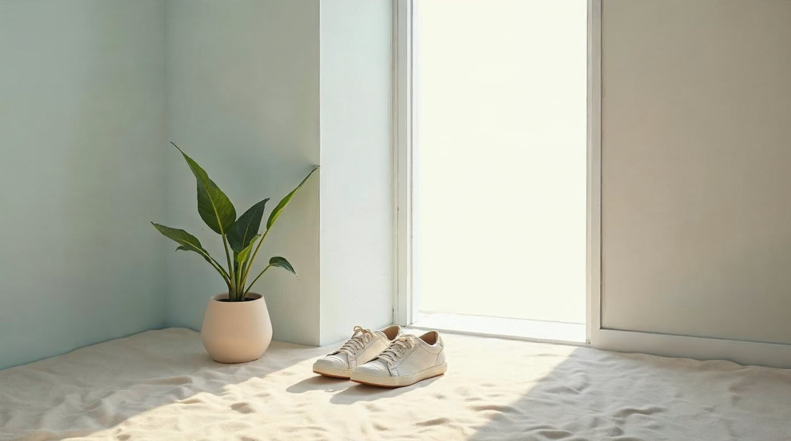
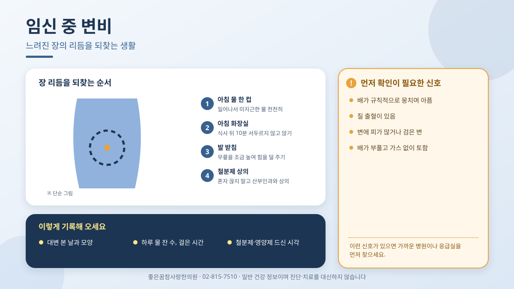

이종호 한의사 감수좋은꿈참사랑한의원 대표원장 (한의사 면허번호 19769)발행 2026-11-26 · 수정 2026-11-26
이 글의 차례
아침마다 화장실에 앉아 한참을 기다립니다. 배는 묵직한데 소식은 없고, 힘을 주자니 혹시 아기에게 무리가 갈까 봐 겁이 납니다. 결국 포기하고 나오면 하루 종일 아랫배가 더부룩하고 가스가 차서 밥맛도 없습니다. 임신 전에는 이런 일이 없었는데, 요즘은 사흘에 한 번도 겨우입니다.
임신 중 변비는 입덧 다음으로 많이 말씀하시는 불편 가운데 하나입니다. 그런데 화장실 이야기다 보니 꺼내기 쑥스러워 혼자 참는 분이 많습니다. 진료실에서는 편하게 말씀하셔도 됩니다. 변비는 임신 중 몸이 바뀌면서 생기는 아주 흔한 변화입니다.
변비가 오래가면 배가 더부룩하고 입맛이 떨어지며, 힘을 많이 주다 보면 치질이 생기거나 심해지기도 합니다. 배에 가스가 차면 숨쉬기도 답답해지고 잠자리도 불편해집니다. 그래서 '원래 그런 거지' 하고 넘기기보다, 장이 조금 덜 힘들게 움직이도록 생활을 함께 손보는 것이 좋습니다.
이 글에서는 임신 중 변비가 왜 잘 생기는지, 물과 식사와 화장실 습관을 어떻게 바꿔 볼지, 철분제와 약은 어떻게 상의할지, 한의원에서 함께 살필 수 있는 부분을 정리했습니다.
왜 임신 중에는 변비가 잘 생기나요?
임신하면 프로게스테론이라는 호르몬이 늘어납니다. 이 호르몬은 자궁이 불필요하게 수축하지 않도록 근육을 느슨하게 하는데, 장의 근육도 함께 느슨해지면서 장이 음식물을 밀어내는 속도가 느려집니다. 장에 오래 머무는 동안 물이 더 많이 흡수되어 변이 단단해집니다.
임신 중기 이후에는 커진 자궁이 장을 누르면서 장의 움직임이 더 둔해집니다. 몸이 무거워 움직임이 줄고, 입덧 때문에 물과 채소를 충분히 먹지 못한 시기가 있었다면 변비가 더 쉽게 자리 잡습니다.
철분제도 중요한 이유입니다. 임신 중에는 철분이 많이 필요해 철분제를 드시는 분이 많은데, 철분제가 변을 단단하고 검게 만들고 변비를 심하게 하는 경우가 있습니다. 철분제를 시작한 뒤 변비가 심해졌다면 이 연결을 의심해 볼 수 있습니다.
여기에 '힘을 주면 안 될 것 같다'는 걱정도 더해집니다. 변의가 와도 참거나 화장실에서 서둘러 나오다 보면 장이 신호를 보내는 리듬이 점점 흐려집니다. 한의학에서는 임신 중 변비를 몸의 진액이 아기 쪽으로 많이 쓰이면서 장이 메마르거나, 기운이 처져 밀어내는 힘이 약해진 흐름으로 나눠 보기도 합니다.
변비와 함께 살펴야 할 것은 무엇인가요?
흔히 겪는 변비
대변 보는 횟수가 줄고, 변이 단단해 힘을 많이 줘야 하며, 다 본 것 같지 않은 느낌이 남습니다. 배가 더부룩하고 가스가 자주 차지만, 심한 통증이나 열은 없습니다.
치질과 항문 출혈
변비가 이어지면 항문 주변 혈관이 부풀어 치질이 생기거나 심해질 수 있습니다. 변을 본 뒤 휴지에 선홍색 피가 조금 묻는 정도라면 치질과 관련된 경우가 많지만, 피의 양이 많거나 검붉은 변이 나온다면 산부인과에 알려 확인을 받아야 합니다.
배 뭉침과 헷갈리는 경우
임신 중에는 변비로 인한 아랫배 불편과 자궁 수축으로 인한 배 뭉침이 헷갈릴 수 있습니다. 배가 단단하게 뭉치며 일정한 간격으로 반복되거나 질 출혈이 함께 있다면 변비가 아니라 자궁 쪽 신호일 수 있어 산부인과에 먼저 연락하셔야 합니다.
스스로 점검해 보세요
해당하는 줄에 표시해 두셨다가 진료 때 보여 주세요.
- 대변을 일주일에 세 번 이하로 본다
- 변이 단단하고 동글동글하게 나온다
- 화장실에서 오래 앉아 있어야 한다
- 다 보고 나서도 남은 느낌이 있다
- 철분제를 시작한 뒤 변비가 심해졌다
- 물을 하루에 몇 잔 마시는지 잘 모르겠다
- 변을 본 뒤 피가 묻어 나온 적이 있다
먼저 이렇게 여쭙니다
임신 중 변비로 오신 분께는 대략 이런 순서로 여쭙니다.
- 지금 임신 몇 주이고, 산부인과 다음 진료는 언제인가요?
- 대변은 며칠에 한 번, 어떤 모양으로 보시나요?
- 임신 전에도 변비가 있었나요?
- 철분제나 다른 영양제는 언제부터, 어떻게 드시나요?
- 하루에 물은 몇 잔, 채소와 과일은 얼마나 드시나요?
- 하루에 걷는 시간은 어느 정도인가요?
- 치질이나 항문 통증, 출혈이 있었나요?
아침 식사를 하시는지, 하루 몇 끼를 드시는지도 여쭙니다. 아침을 거르면 장이 깨어나는 신호가 약해져 변의가 잘 오지 않는 경우가 많기 때문입니다. 출근 시간 때문에 화장실을 참는 일이 잦은지도 함께 봅니다.
산부인과에서 변비약을 받으신 적이 있다면 그 이름도 알려 주세요. 임신 중에도 쓸 수 있는 변비약이 있어서, 생활 관리만으로 어렵다면 산부인과에서 상의해 보시라고 안내하는 경우가 많습니다.
일상에서 먼저 해 볼 수 있는 것
변비는 한 가지 방법보다 여러 습관이 함께 바뀔 때 조금씩 풀리는 경우가 많습니다. 그래도 한꺼번에 하려 하지 말고 하나씩 더해 가세요.
- 아침에 일어나 미지근한 물 한 컵 천천히 마시기
- 아침 식사 뒤 10분쯤 서두르지 않고 화장실에 앉아 보기
- 변기에 앉을 때 발 아래에 낮은 받침을 두어 무릎을 엉덩이보다 조금 높이기
- 하루 물은 조금씩 나눠 자주, 국물보다는 맑은 물로
- 익힌 채소, 해조류, 잡곡, 과일 가운데 넘어가는 것을 한 가지씩 늘리기
- 산부인과에서 제한하지 않았다면 하루 20분 이상 걷기
발 받침은 생각보다 도움이 됩니다. 무릎이 조금 올라가면 항문 쪽 근육이 풀리면서 힘을 덜 주고도 변이 나오기 쉬워집니다. 집에 있는 작은 의자나 두꺼운 책을 활용해도 됩니다.
식이섬유를 갑자기 많이 늘리면 오히려 가스가 차고 배가 더 불편할 수 있습니다. 며칠에 걸쳐 조금씩 늘리고, 섬유질을 늘릴 때는 물도 함께 늘려 주세요. 물 없이 섬유질만 늘리면 변이 더 단단해지기도 합니다.
푸룬이나 키위, 고구마처럼 변비에 도움이 된다고 알려진 음식을 찾는 분이 많습니다. 몸에 맞는 분에게는 도움이 될 수 있지만, 한꺼번에 많이 드시면 배가 아프거나 설사를 할 수 있으니 적당한 양부터 시작하세요.
화장실에서는 숨을 참고 세게 힘주기보다, 숨을 내쉬면서 배를 부드럽게 아래로 미는 느낌으로 해 보세요. 오래 앉아 휴대폰을 보는 습관은 항문 주변에 부담을 주니, 10분 안에 나오지 않으면 일단 일어났다가 다음 신호를 기다리시는 편이 좋습니다.
변의가 왔을 때 참지 않는 것도 중요합니다. 출근길이나 회의 중이라 미루다 보면 그 신호가 사라지고, 다음 신호가 올 때까지 변은 더 단단해집니다. 아침 시간을 10분만 넉넉하게 잡아 두면 장의 리듬을 되찾는 데 도움이 됩니다.
임신 시기에 따라 달라지는 변비
임신 초기에는 호르몬 변화와 입덧이 겹쳐 물과 음식을 충분히 먹지 못하면서 변비가 시작되는 경우가 많습니다. 이때는 넘어가는 음식과 물을 조금씩이라도 챙기는 것이 먼저이고, 섬유질은 입덧이 가라앉은 뒤에 차근차근 늘려도 됩니다.
임신 중기에는 입맛이 돌아오면서 식사를 바로잡기 좋은 때입니다. 철분제를 이 무렵 시작하는 분이 많아 변비가 다시 심해지기도 하니, 아침 물 한 컵과 걷기 습관을 이 시기에 자리 잡아 두시면 좋습니다.
임신 후기에는 커진 자궁이 장을 누르고 몸이 무거워 움직임이 줄어듭니다. 한 번에 많이 먹기 어려우니 식사를 조금씩 나눠 드시고, 걷기가 힘들다면 집 안에서 자주 일어나 움직이는 것만으로도 장에 도움이 됩니다.
출산을 앞두고 변비와 치질이 함께 심해졌다면 산부인과 정기 진료 때 꼭 말씀해 주세요. 출산 전후로 쓸 수 있는 방법을 미리 상의해 두면 마음이 한결 편해집니다.
마음의 긴장도 장을 붙잡습니다
장은 마음의 긴장에 민감하게 반응합니다. 출산 준비와 일, 집안일로 마음이 쫓기는 시기에는 변의를 느낄 여유조차 없어 장의 리듬이 흐트러지기 쉽습니다. 아침에 5분만 일찍 일어나 따뜻한 물을 마시고 천천히 숨을 고르는 시간을 만들어 보세요.
여행이나 친정 방문처럼 잠자리와 화장실 환경이 바뀌는 날에도 변비가 갑자기 심해지는 분이 많습니다. 이런 날은 평소 마시던 물의 양과 아침 화장실 시간을 최대한 비슷하게 지키고, 집에서 쓰던 발 받침 대신 낮은 상자나 가방을 활용해 보세요. 낯선 곳이라고 참는 일이 없도록 마음을 편히 가지시는 것이 먼저입니다.
철분제와 변비, 이렇게 상의해 보세요
철분제 때문에 변비가 심해졌다고 해서 혼자 끊으시면 안 됩니다. 철분은 임신 중 꼭 필요한 영양소이기 때문입니다. 철분이 부족하면 쉽게 지치고 어지러우며, 그 피로가 다시 움직임을 줄여 변비를 키우는 흐름이 생기기도 합니다. 대신 산부인과에 변비가 심하다고 말씀하시면 철분제의 종류나 먹는 시간, 양을 조정할 수 있는지 함께 상의할 수 있습니다.
철분제는 공복에 먹을 때 흡수가 잘된다고 알려져 있지만, 속이 불편하거나 변비가 심하다면 먹는 시각을 바꿔 보도록 안내받는 경우도 있습니다. 어떤 방법이 맞는지는 처방하거나 권한 곳에서 정해 주세요.
한의원에서 함께 살필 수 있는 경우
- 산부인과에서 다른 문제가 없다고 확인받았지만 변비로 배가 더부룩하고 입맛이 없는 경우
- 변비와 함께 속쓰림이나 트림, 가스가 잦은 경우
- 변비와 함께 잠이 얕고 몸이 무겁게 처지는 경우
- 출산 뒤에도 변비가 이어질까 걱정되는 경우
좋은꿈참사랑한의원에 오시면 먼저 임신 주수와 산부인과 진료 내용, 드시는 철분제와 약을 확인하고, 아래 '먼저 확인이 필요한' 신호가 없는지부터 봅니다. 그다음 편한 자세로 맥을 짚으며 대변의 모양과 횟수, 배의 더부룩함, 입맛과 물 마시는 양을 함께 여쭙습니다.
진찰한 내용을 바탕으로 생활에서 바꿔 볼 것 하나와 함께 부드러운 관리, 침, 한약 상담 가운데 지금 주수와 상태에 맞는 것을 정합니다. 임신 중 한약과 침은 먼저 임신 사실을 알리고 산부인과와 상의한 뒤 신중하게 정하며, 배를 세게 누르거나 강한 자극은 쓰지 않습니다. 산부인과에서 받은 약과 철분제는 상의 없이 멈추지 않습니다.
다시 오시면 지난번 뒤로 대변을 며칠에 한 번 보셨는지, 물과 걷는 시간은 어땠는지부터 이어서 여쭙습니다.
이렇게 기록해 오시면 상담이 쉬워집니다
일주일만 적어 보셔도 장의 리듬이 보이기 시작합니다.
- 날짜와 임신 주수
- 대변을 본 날과 모양(단단함, 보통, 무름)
- 하루 마신 물의 대략적인 잔 수
- 철분제와 영양제를 드신 시각
- 채소, 과일, 잡곡을 챙긴 끼니
- 걸은 시간
- 배 더부룩함, 가스, 항문 통증이 있었던 날
기록을 보면 물을 적게 마신 날이나 철분제를 공복에 먹은 날 다음에 변비가 심해지는 식의 연결이 보이기도 합니다. 그 연결을 알면 바꿀 것 하나가 분명해집니다.

출산 뒤까지 이어지지 않도록
가족과 함께 사는 분이라면 아침 화장실 시간을 서로 배려해 주세요. 출근 준비로 바쁜 아침에 화장실을 오래 쓰기 미안해 참는 분이 생각보다 많습니다. 식단도 가족이 함께 잡곡밥과 익힌 채소 반찬을 늘리면 혼자 따로 챙기는 부담이 줄어듭니다. 저녁 식사 뒤 함께 동네를 한 바퀴 걷는 시간은 장에도, 마음에도 도움이 됩니다.
변비가 심한 날 배를 문지를 때는 배꼽 둘레를 시계 방향으로 아주 가볍게 쓰다듬는 정도로만 하시고, 꾹꾹 누르는 것은 피하세요. 배가 뭉치는 느낌이 들면 바로 멈추고 쉬셔야 합니다.
임신 중 변비는 출산 뒤 몇 주까지 이어지는 경우가 있습니다. 출산 직후에는 회음부 통증 때문에 힘주기가 더 겁나기도 합니다. 임신 중에 만든 물 마시기와 아침 화장실 습관이 출산 뒤에도 든든한 바탕이 되어 줍니다.
이번 주에는 아침 물 한 컵과 발 받침 두 가지만 해 보세요. 다음에 오시면 그 일주일 동안의 대변 기록부터 함께 보겠습니다.
이런 증상은 먼저 확인이 필요합니다
- 배가 단단하게 뭉치며 일정한 간격으로 아프거나 질 출혈이 있는 경우
- 변에 피가 많이 섞이거나 검은 변이 나오고, 배가 부풀며 가스도 나오지 않고 토하는 경우
이런 신호가 있으면 한의원보다 가까운 병원이나 응급실을 먼저 찾으세요.
함께 읽으면 좋은 글
- 임신 중이거나 임신 가능성이 있을 때는 한의원에 무엇을 알려야 하나요?
- 임신 중 입덧이 심할 때는 하루를 어떻게 지내고, 한의원에는 무엇을 알려야 하나요?
- 배가 자주 아프고 설사·변비가 반복되는 과민성 장 증후군은 어떻게 살피나요?
- 식사 뒤에 속이 더부룩한 것은 무엇 때문이고, 속쓰림과는 어떻게 다른가요?
- 출산 뒤 몸 회복, 관절·땀·잠·기분은 무엇부터 살피나요?

여쭙는 것
- 지금 임신 몇 주이고, 산부인과 다음 진료는 언제인가요?
- 대변은 며칠에 한 번, 어떤 모양으로 보시나요?
- 임신 전에도 변비가 있었나요?
생활에서 해 볼 것
- 아침에 일어나 미지근한 물 한 컵 천천히 마시기
- 아침 식사 뒤 10분쯤 서두르지 않고 화장실에 앉아 보기
- 변기에 앉을 때 발 아래에 낮은 받침을 두어 무릎을 엉덩이보다 조금 높이기
한의원에서 함께 살필 것
- 산부인과에서 다른 문제가 없다고 확인받았지만 변비로 배가 더부룩하고 입맛이 없는 경우
- 변비와 함께 속쓰림이나 트림, 가스가 잦은 경우
- 변비와 함께 잠이 얕고 몸이 무겁게 처지는 경우
먼저 확인이 필요한 신호
- 배가 단단하게 뭉치며 일정한 간격으로 아프거나 질 출혈이 있는 경우
- 변에 피가 많이 섞이거나 검은 변이 나오고, 배가 부풀며 가스도 나오지 않고 토하는…
한눈에 보는 표
| 구분 | 핵심 |
|---|---|
| 여쭙는 것 | 지금 임신 몇 주이고, 산부인과 다음 진료는 언제인가요? 대변은 며칠에 한 번, 어떤 모양으로 보시나요? |
| 생활에서 해 볼 것 | 아침에 일어나 미지근한 물 한 컵 천천히 마시기 아침 식사 뒤 10분쯤 서두르지 않고 화장실에 앉아 보기 |
| 한의원에서 함께 살필 것 | 산부인과에서 다른 문제가 없다고 확인받았지만 변비로 배가 더부룩하고 입맛이 없는 경우 변비와 함께 속쓰림이나 트림, 가스가 잦은 경우 |
| 먼저 확인이 필요한 신호 | 배가 단단하게 뭉치며 일정한 간격으로 아프거나 질 출혈이 있는 경우 변에 피가 많이 섞이거나 검은 변이 나오고, 배가 부풀며 가스도 나오지 않고 토하는 경우 |
자주 묻는 질문
임신 중에 변을 볼 때 힘을 주면 아기에게 안 좋나요?
평소처럼 변을 보는 정도의 힘은 대개 걱정하지 않으셔도 된다고 안내합니다. 다만 숨을 참고 오래 세게 힘주는 것은 치질을 키울 수 있어, 숨을 내쉬며 부드럽게 밀고 발 받침을 쓰시길 권합니다.
임신 중에 변비약을 먹어도 되나요?
임신 중에도 쓸 수 있는 변비약이 있지만, 종류와 양은 산부인과에서 정해 주셔야 합니다. 약국에서 사기 전에 임신 사실을 알리고 상의해 주세요.
철분제 때문에 변비가 심한데 끊어도 되나요?
혼자 끊기보다 산부인과에 먼저 알려 주세요. 철분제의 종류나 먹는 시간, 양을 조정할 수 있는지 함께 상의할 수 있습니다.
임신 중 변비에 한약을 먹어도 되나요?
임신 중 한약은 먼저 임신 사실과 주수를 알리고 산부인과와 상의한 뒤, 드시는 철분제와 약을 모두 확인하고 신중하게 정합니다.
물은 하루에 얼마나 마셔야 하나요?
사람마다 다르지만, 한 번에 많이 마시기보다 하루 동안 조금씩 나눠 자주 드시는 것을 권합니다. 붓기나 다른 이유로 산부인과에서 따로 안내받았다면 그 안내를 따르세요.
좋은꿈참사랑한의원은 재진 때 지난번 이야기부터 이어서 여쭙니다. 진료시간과 예약은 오시는 길에서 확인하세요.
어디서 상담받을 수 있나요?
좋은꿈참사랑한의원은 서울 동작구 만양로2길 2 신성빌딩 3층·5층(서울 동작구 상도동, 7호선 상도역 3번 출구 근처)에 있습니다. 한의사 3명(이종호 대표원장, 조영기 수석진료원장, 정원영 진료원장)이 진료합니다. 진료시간은 평일 09:30~20:00(점심 13:00~14:00), 토·일·공휴일 09:30~15:00이며, 방문 전 전화로 확인을 권합니다. 예약은 네이버 예약, 카카오톡 상담, 전화 02-815-7510로 받습니다.
이 글은 일반적인 건강 정보이며 개인의 진단이나 치료를 대신하지 않습니다. 증상이 있거나 복용 중인 약이 있다면 진료를 통해 확인하세요. 치료 효과는 개인마다 다를 수 있습니다.
작성 기준: 일반적으로 알려져 있는 건강 정보를 참고해 정리했습니다(대표원장 감수). 증상 기록은 1~2주 동안 하루 1회, 비슷한 시간에 적어 오시면 지난 상태와 비교하기 쉽습니다.